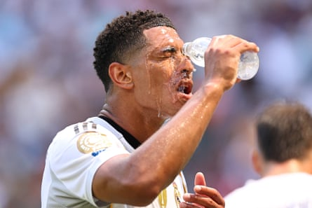
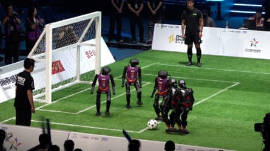

COPA LOAD OF THAT
What a beautiful tale … right? The full-time whistle brought those scenes we know well from the real World Cup. Players on their knees: the victors turning to the heavens, the losers sucked into the dirt. Simone Inzaghi looked a particularly happy chap just weeks on from his nadir, that Bigger Cup embarrassment with Inter against PSG. Manchester City, the European heavyweights, had just been defeated by his brave underdogs, Al-Hilal. Yes, those same longshots who two years ago tried to buy Kylian Mbappé from PSG for £259m , shortly after coming under the ownership of Saudi Arabia’s Public Investment Fund.
The PIF – which appears intent on clawing its mitts over sport – is the investment arm of a journalist-killing state and chaired by the big man himself, Mohammed bin Salman. The fund is also an official partner of Copa Gianni while a PIF subsidiary bought a $1bn stake in Dazn, the tournament broadcaster, earlier this year. They didn’t get Mbappé but they still nabbed Neymar. Al-Hilal may have delivered a sporting upset – “We knew we had to climb Mount Everest without oxygen and we were great,” proclaimed Inzaghi – but this isn’t a plucky underdog story. And no, that doesn’t make City a group of saints.
It’s finally summer time for Pep Guardiola, though a nagging feeling will follow, the question left to be answered on how these few weeks in the USA USA USA will impact his side next season/this season (the lines feel blurred with this tournament). Prior to the Al-Hilal match he had wondered out loud if his club will be “destroyed” by the Copa Gianni when their regular commitments resume. An extra couple of weeks on the beach – the final is still another 12 days away – could end up being a decent consolation.
Plenty of powerhouses remain, though they remain stuck on one side of the draw; PSG have Bayern in the quarters, with the winner potentially facing Real Madrid in the semi-finals. Chelsea supporters should perhaps allow themselves to believe; they must beat Palmeiras if they want to set up a possible semi-final clash with Al-Hilal . The gaudy wastefulness of a project that has turned Brighton into a de-facto academy against the pillar of a behemoth propaganda machine. Let the beautiful game commence.
LIVE ON BIG WEBSITE
Join Beau Dure from 8pm BST for very hot MBM coverage of Real Madrid 3-1 Juventus in the last 16 of Copa Gianni.
QUOTE OF THE DAY
The incongruity of the situation escapes no one – except, of course, Gianni Infantino and his flatterers. From his ivory tower, which he tours around the world, the president shows no concern for the fate the international calendar reserves for top players. His [Copa Gianni] proves, to the point of absurdity, that it is urgent to stop this game of massacre” – France’s professional footballers’ union (UNFP) hits out at the Fifa overlord amid growing concern over fixture congestion and player welfare, including that from Fifpro, which has called on half-time breaks being extended to 20 minutes in extreme heat.
Jude Bellingham seeking hydration, earlier.Photograph: Robbie Jay Barratt/AMA/Getty Images
FOOTBALL DAILY LETTERS
If a tree falls in a forest, and no one is around, does it make a sound? If a football team loses in a competition, and no one is watching, is it a shock?” – Darren Leathley.
From yesterday’s full email edition, many thanks for sharing with us the tale of Dorking’s Marc White and his dire attempt to recreate the Wheeltappers and Shunters Social Club (kids, ask your nan why that was even a thing). Can I just point out that due to the consequent ban, your caption on that photo of the guy clearly standing on a touchline shouldn’t be ‘he’ll be here all week’. That’s the one place he won’t be for a bit” – Jon Millard.
Re: this news story . ‘Footage of three-a-side game shows humanoids struggling to kick the ball or stay upright.’ The best Football Daily headline opportunity ever provided by Big Website! I don’t know where to begin” – Nigel Sanders.
Insert Djinkin’ Djimi gag here.Photograph: Reuters
Re: yesterday’s Memory Lane (full email edition). It’s a shame we can’t see the car in front of Charlie George’s ‘fancy motor’. I’d love to see him manoeuvre out of what looks like a very tight spot. Maybe friend of the newsletter Max Rushden could give him some tips ” – David Bell.
Please send your letters to the.boss@theguardian.com . Today’s winner of our letter o’ the day competition is … David Bell, who gets some Football Weekly merch. We’ll be in touch. Terms and conditions for our competitions, when we run them, can be viewed here .
- This is an extract from our daily football email … Football Daily. To get the full version, just visit this page and follow the instructions .